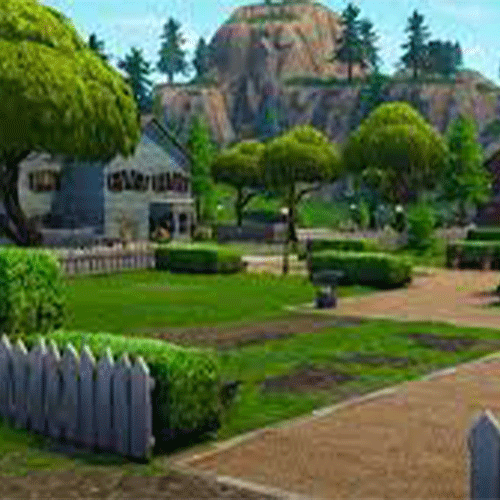
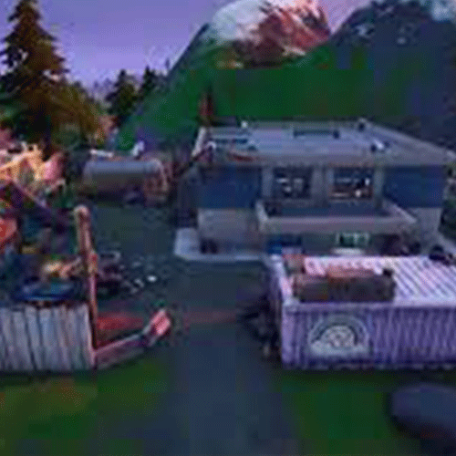
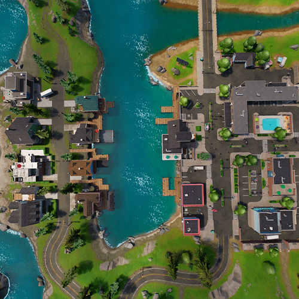
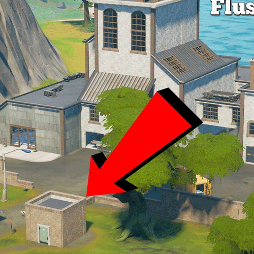
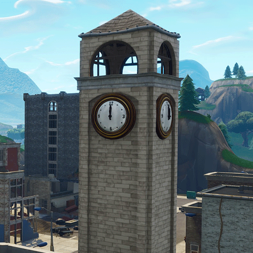

top 5 drop locations to get dubs
5. Pleasant Park
 as we all know, this iconic drop locatoin bis probably one of the best locations in the entire game. with its immensive cover from fire, to its great loot and location, it is probably one of the safest yet best spots to secure kills and epic victory royales.
4. caty corner
 this location is probably one of the best in the entire game. it's super great loot, and not to mention , kit. he dropped the shockwave grenade launcher, which was a infinite shockwave launcher, granted you had enough rockets. he also dropped the mythical charged shotgun, which was pretty ass but it was the best shotgun in the game at the time.
3. tinsel town
 tinsel town (formerly known as "sleepy sound") is proabbly the ABOSLUTE best drop spot in the game. It has many loots and it even has a slurp truck. in chapter 3 season 3 there was a reality tree in the middle of the location. there were many thing sabout this location which made it the best, but unfortunatly it was not able to be put at number one because its no longer in the game.
2. flush factory
this location was the best in chapter 1. with all of its toilets giving you at least 150 brick maxiumum, it would let you build as much asyou possibly wanted. there was a lot of loot, a lot of containers, a lot of slurp fish, a aslurup truck, and a lot brick. the toilets were the best part of the place, and to be honest, it was probably the best location ever, period.
1. tilted clocktower
tilted towers in gneral is the FUCKING WORST landing spot in the game. howerver, the clock tower, on the other hand, is probably the best landing location in the entirety of hte battle royale genre. it has so many layers to it, which contain a maximum of 4 chests, which would give youy an entire loadout and maximum shields. you could shoot people from the top of your tower, which would destroy poeple always.